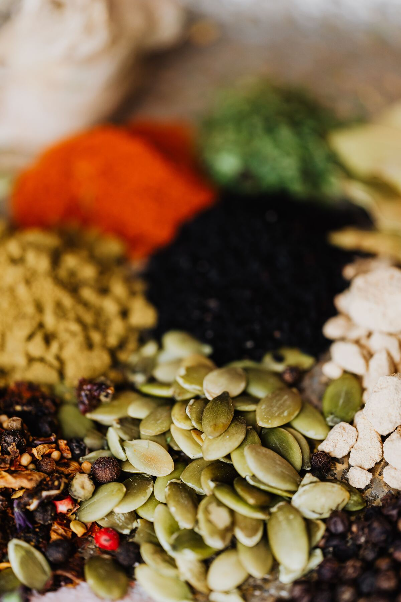
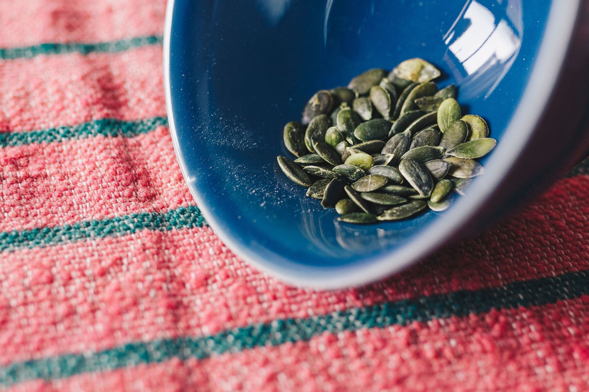

Seeds get treated like the ultimate lazy add-on. A fistful straight from the packet, scattered over whatever you're eating, done. But hardly any food culture has actually eaten them raw like that.
People have soaked, roasted and ground their seeds for generations, mostly because raw seeds can be harder on your gut and stingy with their own nutrients until you coax them out a bit. Here's the real breakdown: why it's worth preparing your seeds, what changes from seed to seed, and exactly how long to soak and roast each one.
1Why Bother Preparing Seeds At All
Raw seeds carry phytic acid in their outer layer. It's a compound that binds to minerals like iron, zinc, magnesium and calcium, and stops your body absorbing them properly. Nothing dangerous, just wasteful. You could be eating all the nutrition seeds are known for and only getting a fraction of it.
Soaking seeds in water kicks off an enzyme called phytase that's already sitting dormant inside the seed. It breaks down some of that phytic acid before it even reaches your gut, and it softens the seed too, so a properly soaked seed roasts more evenly and tastes less bitter. This isn't some wellness trend rediscovered on Instagram: it's well documented in food science, and it's the same logic behind soaking dried beans or feeding a sourdough starter. Different food cultures landed on the same idea on their own: don't eat your seeds straight out of the bag.

2Soak Times by Seed
| Seed | Soak time | Notes |
|---|---|---|
| Pumpkin seeds (pepitas) | 6–8 hours | Overnight is easiest |
| Sunflower seeds | 4–8 hours | Up to overnight for a firmer bite |
| Sesame seeds | 1–2 hours | Optional, mostly for flavour |
| Hemp seeds | No soak needed | Already hulled and soft, negligible phytic acid |
| Flax seeds | Best ground, not soaked | Whole flax passes through undigested either way, grind fresh just before eating instead |
| Chia or sabja seeds | Soak until gelled (10–20 min) | Used in drinks and puddings rather than roasted |
Use filtered water and a pinch of salt for the soak. Rinse and drain well afterwards.
3Roasting Times
This is the part that trips people up. Seed size and oil content change everything, so a delicate, high-oil seed like sesame will burn in the time it takes a dense pumpkin seed to just turn golden. One blanket "roast for 15 minutes" instruction doesn't hold up across all of them.
| Seed | Method & time | Watch for |
|---|---|---|
| Pumpkin seeds (pepitas) | Oven, 160°C (325°F), 12–15 min | Puffed up, golden, you'll hear the odd pop |
| Sunflower seeds (hulled) | Oven, 150°C (300°F), 8–12 min | Light golden, goes from done to burnt quickly |
| Sesame seeds | Dry pan, medium heat, 2–3 min, tossing constantly | Fragrant, just turning golden, seconds matter here |
| Flax seeds | Dry pan, low-medium heat, 2–3 min | Just fragrant, don't push further, overroasting degrades the omega-3s |
| Hemp seeds | Dry pan, low heat, 2–3 min, or skip it | Soft and oily even raw, roasting is optional and mostly for flavour |
Method for the oven-roasted ones
Rinse & dry
Rinse soaked seeds and pat thoroughly dry. Leftover moisture means steaming, not roasting.
Spread
Spread in a single layer on a lined tray.
Roast
Roast per the times above, tossing halfway.
Season
Toss with a little salt, or a spice like smoked paprika or cinnamon, while still warm.
Have a dehydrator instead of soaking-then-roasting? Go 40–45°C (105–115°F) for 8–24 hours until fully dry and crisp.

4Storage
Let seeds cool completely before storing. Any residual heat creates condensation, and condensation means soggy seeds. Store in an airtight glass jar (you know the ones, collecting under the sink):
Room temperature
Cool and dark: up to 2 weeks
Fridge
Up to 2 months
Freezer
Several months. Worth it for larger batches, since natural oils in seeds can turn rancid over time